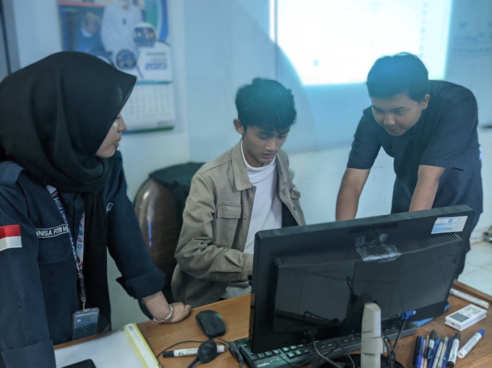
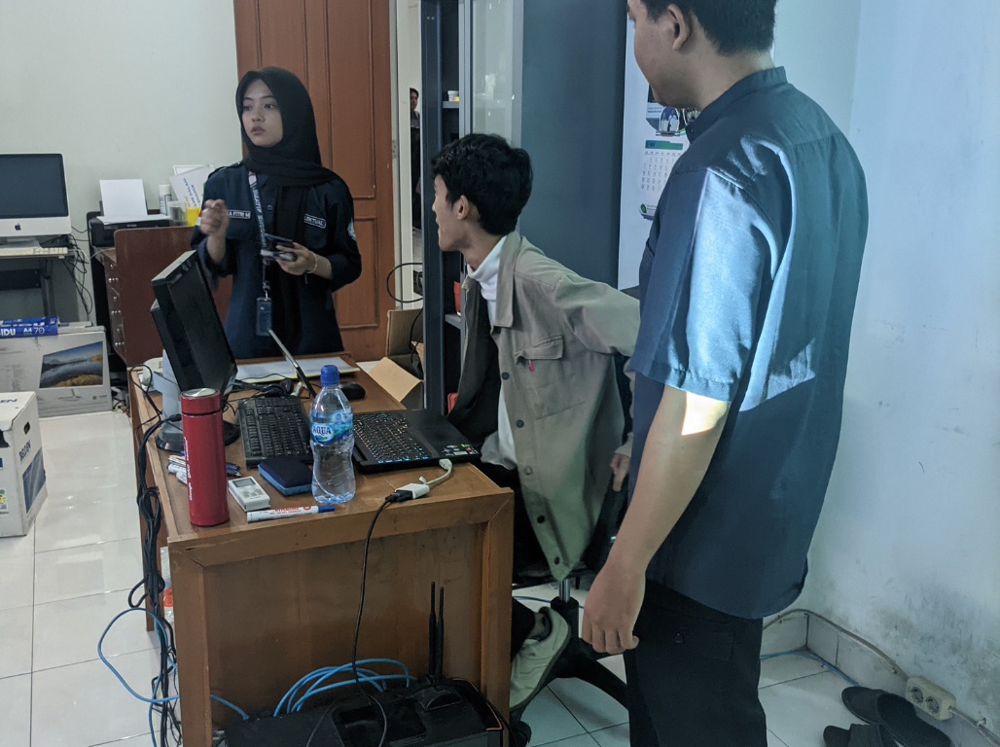
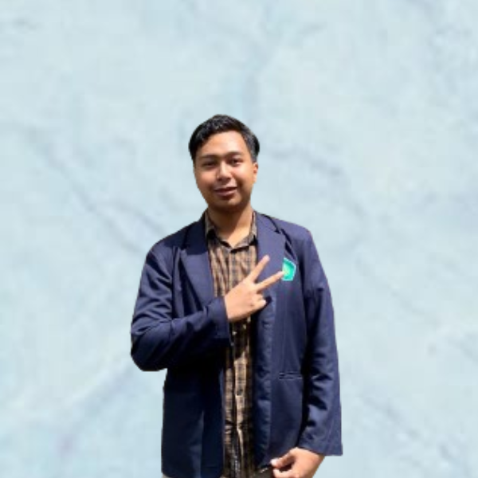
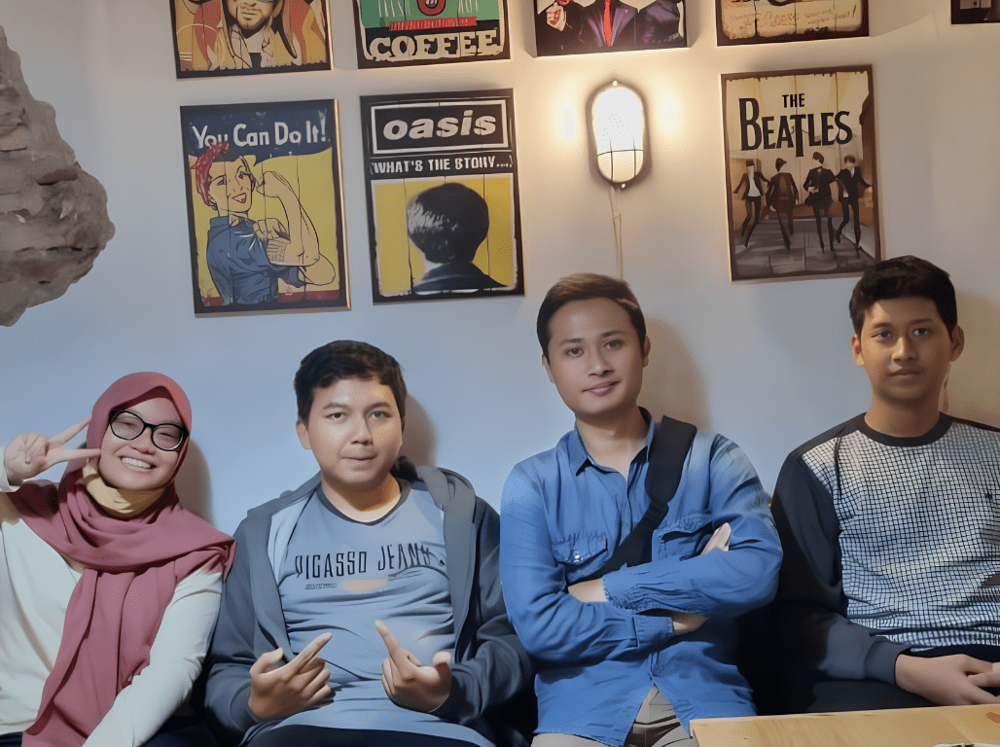

Tentang

Selamat datang di halaman resmi komunitas Uinbuntu! Kami adalah komunitas yang didirikan di Universitas Islam Negeri (UIN) Maulana Malik Ibrahim Malang, yang berfokus pada pengembangan dan pembelajaran open source serta teknologi cloud computing. Dengan semangat ulul albab, kami bertekad untuk menjadi pelopor dalam penggunaan dan pengembangan teknologi yang berbasis pada prinsip-prinsip open source.
Visi kami adalah menjadi komunitas pembelajar open source dan cloud computing yang ulul albab. Kami berkomitmen untuk menjadi pusat pembelajaran dan pengembangan teknologi terbuka yang berkualitas dan berdaya saing tinggi.
Sebagai komunitas yang berfokus pada pengembangan dan pembelajaran open source serta teknologi cloud computing, kami memiliki misi sebagai berikut:
- Menganalisis System Open Source
- Mengembangkan System Open Source
- Melakukan Kerjasama Terkait dengan Pengembangan Open Source
Dengan visi dan misi yang jelas, kami mengundang Anda untuk bergabung dan berkontribusi bersama kami dalam memajukan dunia open source dan cloud computing. Mari kita bersama-sama menjadi agen perubahan yang membawa manfaat bagi masyarakat dan dunia teknologi secara luas. Terima kasih atas minat dan dukungannya!

Anggota Kami
Muhammad Haris Fahrul Rozzy
Router LayerAngelica Luciano
Router LayerMuhammad Ferelian El Hilaly Daksana
DNS LayerMuhammad Prima Saifullah
Creative Layer
Muhammad Addi Rizza Rahman
Network LayerFrequently Asked Questions
Kontak
Lokasi:
Jl. Gajayana No.50, Dinoyo, Kec. Lowokwaru, Kota Malang, Jawa Timur 65144
Email:
uinbuntumalang@gmail.com
Jam Kerja:
Senin-Jum'at: 14.00-16.00
